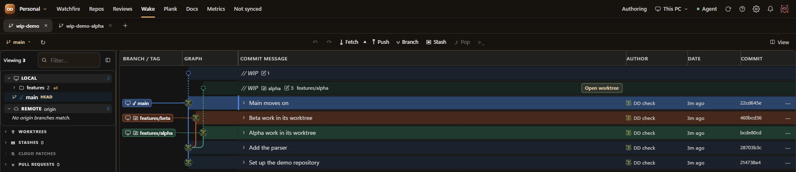

Watchfire, and a better Wake
Yesterday was about getting Forge onto the internet. Today is about the app I spend all day in. DD-ReForged went from 0.3.18 to 0.3.22 in a couple of days, and it's on my PC, in VS Code and on my phone.
Watchfire
When you lead a team, the first question every morning is what's burning. So DD-ReForged now opens on Watchfire, a single page for everything that needs you, across every repo.
- Pull requests sorted by what they need: resolve conflicts, changes requested, ready to merge, waiting for review, drafts and snoozed.
- Work in progress across every repo, with staged and unstaged counts for each worktree.
- Personal and Team views, so you can switch between what's yours and what's everyone's.
- GitHub issues and repo groups, plus snoozing something for a day, a week or until a date you pick.
Each repo shows up as it loads, and a slow or broken one gets its own line instead of holding up the rest. The numbers now say what they're actually counting, too. I'd been glancing at a badge without being sure what it meant, and that's no good on the page you open first.
Wake sees your worktrees


I live in worktrees, and Wake only ever showed the changes in the one I had open. Now every worktree gets its own work-in-progress row, sitting right above the commit it's based on, with a button to open it.
Reading a stack as one change
This is my favourite of the bunch. Ctrl-click a few commits, or pick Review stack from a commit or branch, and Wake shows all their file changes together. An unbroken run of commits gets one true combined diff. If you skip some in the middle, you get a per-file list instead, clearly labelled as not a combined diff, because I'd rather it said so than pretended.
The rest of the polish
- Diffs have syntax colours and can use your VS Code theme, in reviews and in Wake.
- The graph now has lines that turn into their lane with one rounded corner, so it's easier to follow.
- Wake's toolbar is three tidy groups and a View menu.
- Right-click menus on files: open in VS Code or your own editor, reveal the folder, open your diff tool, see history or blame, copy paths, and restore from a commit.
- Repo tabs can be closed in bulk and given a display name.
- Reviews are clean capsule rows, with the description and files previewed beside the list.
Next
The accounts work from yesterday's post comes first, then the new layout across the rest of the screens, now that I've approved the design.